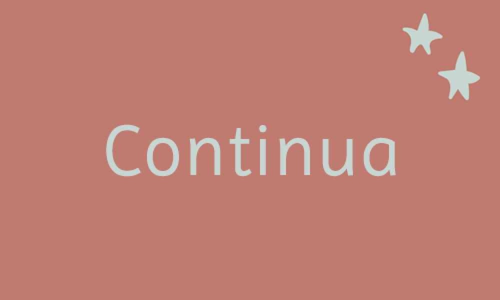

Sólo necesitas un lugar privado en casa donde te sientas cómodo.

Se adapta a tus días y horarios.

Aunque viajes o te muevas de lugar, podes continuar tu proceso.
Todo lo que vino después, fue la necesidad de compartir mi experiencia, con la plena seguridad de que cualquier persona puede experimentar lo mismo y lograr su propio desarrollo personal. Leer más
La consultoría ofrece un espacio de escucha empática sin hacer juicios de valor, acompañando al consultante en problemáticas de la vida cotidiana y en las crisis vitales a lo largo de la vida. Leer más
Cuando los problemas te excedan Cuando tu malestar emocional no te permita seguir con tu rutina Cuando necesites explorar un área de tu vida Cuando sientas que te cuesta tomar decisiones Cuando te planteas que quieres vivir de otro modo Leer más
Sólo necesitas un lugar privado en casa donde te sientas cómodo.
Se adapta a tus días y horarios.
Aunque viajes o te muevas de lugar, podes continuar tu proceso.